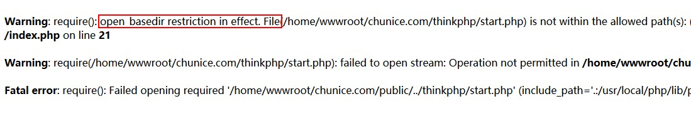

部分 Linux 主机设置了 open_basedir（可将用户访问文件的活动范围限制在指定的区域，通常是入口文件根目录的路径） 选项，导致 ThinkPHP5 访问白屏或者报错
如果把ThinkPHP5部署在了LAMP/LNMP环境上很有可能出现白屏的情况，这个时候需要开启 php 错误提示来判断是否是因为设置了open_basedir选项出错。
打开 php.ini 搜索 display_errors，把 Off 修改为 On就开启了 php 错误提示，这时再访问之前白屏的页面就会出现错误信息。如果错误信息如下那么很有可能就是因为open_basedir的问题。

把权限作用域由入口文件目录修改为框架根目录
打开 php.ini 搜索 open_basedir,把
open_basedir = "/home/wwwroot/tp5/public/:/tmp/:/var/tmp/:/proc/"修改为
open_basedir = "/home/wwwroot/tp5/:/tmp/:/var/tmp/:/proc/"如果你的 php.ini 文件的 open_basedir 设置选项是被注释的或者为 none，那么你需要通过 Apache 或者 Nginx 来修改
php.ini 文件通常是在 /usr/local/php/etc 目录中，当然了这取决于你 LAMP 环境配置
Apache 需要修改 httpd.conf 或者同目录下的 vhost 目录下 你的域名.conf 文件，如果你的生成环境是 LAMP 一键安装包配置那么多半就是直接修改 你的域名.conf 文件
apache
├─vhost
├─www.thinkphp.cn.conf
├─......
├─httpd.conf打开 你的域名.conf 文件 搜索 open_basedir,把
php_admin_value open_basedir "/home/wwwroot/www.thinkphp.cn/public/:/tmp/:/var/tmp/:/proc/"修改为
php_admin_value open_basedir "/home/wwwroot/www.thinkphp.cn/:/tmp/:/var/tmp/:/proc/"然后重新启动 apache 即可生效
域名.conf 文件通常是在 /usr/local/apache/conf 目录中，当然了这取决于你 LAMP 环境配置
Nginx 需要修改 nginx.conf 或者 conf/vhost 目录下 你的域名.conf 文件，如果你的生成环境是 LNMP/LTMP 一键安装包配置那么多半就是直接修改 你的域名.conf 文件
nginx
├─conf
├─vhost
├─www.thinkphp.cn.conf
├─nginx.conf
├─......
├─nginx.conf打开 你的域名.conf 文件 搜索 open_basedir,把
fastcgi_param PHP_VALUE "open_basedir=/home/wwwroot/www.thinkphp.cn/public/:/tmp/:/proc/";修改为
fastcgi_param PHP_VALUE "open_basedir=/home/wwwroot/www.thinkphp.cn/:/tmp/:/proc/";然后重新启动 Nginx 即可生效
域名.conf 文件通常是在 /usr/local/nginx/conf/vhost 目录中，当然了这取决于你 LNMP/LTMP 环境配置
打开 项目根目录下找到 user.ini 文件，搜索 open_basedir,把
open_basedir=/home/wwwroot/www.thinkphp.cn/public/:/tmp/:/proc/修改为
open_basedir=/home/wwwroot/www.thinkphp.cn/:/tmp/:/proc/然后重新启动 web 服务器 即可生效
直接修改 ThinkPHP5 的入口文件会把你的框架文件及程序目录暴露在外网，敬请注意安全防护。
修改入口文件方法请参考(部署-虚拟主机环境)